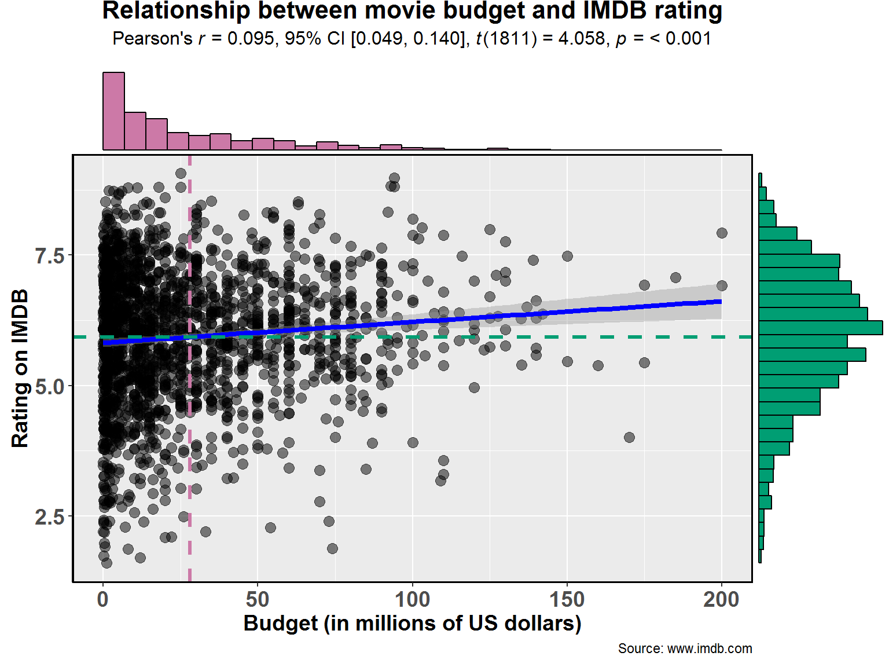
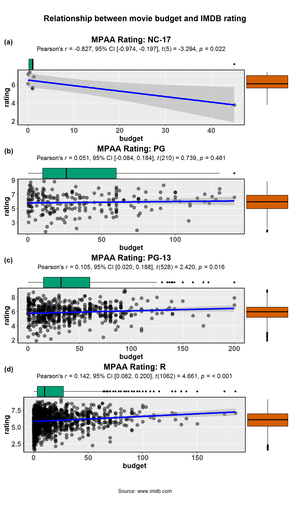
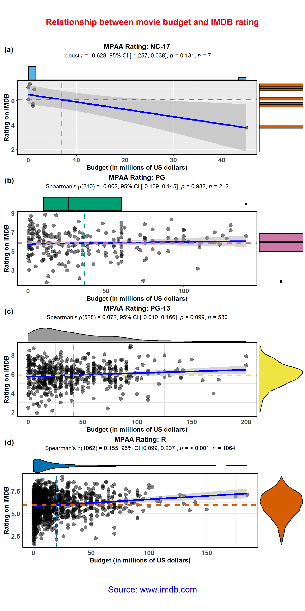

ggscatterstats.RmdThe function ggstatsplot::ggscatterstats is meant to provide a publication-ready scatterplot with all statistical details included in the plot itself to show association between two continuous variables. We will see examples of how to use this function in this vignette with the ggplot2movies dataset.
To begin with, here are some instances where you would want to use ggscatterstats-
Note before: The following demo uses the pipe operator (%>%), so in case you are not familiar with this operator, here is a good explanation: http://r4ds.had.co.nz/pipes.html
ggscatterstats
To illustrate how this function can be used, we will use the ggplot2movies dataset. This dataset (available in package on CRAN) provides a dataset about movies scraped from IMDB. Let’s have a look at the data-
library(ggplot2movies)
library(dplyr)
dplyr::glimpse(x = ggplot2movies::movies)
#> Observations: 58,788
#> Variables: 24
#> $ title <chr> "$", "$1000 a Touchdown", "$21 a Day Once a Month"...
#> $ year <int> 1971, 1939, 1941, 1996, 1975, 2000, 2002, 2002, 19...
#> $ length <int> 121, 71, 7, 70, 71, 91, 93, 25, 97, 61, 99, 96, 10...
#> $ budget <int> NA, NA, NA, NA, NA, NA, NA, NA, NA, NA, NA, NA, NA...
#> $ rating <dbl> 6.4, 6.0, 8.2, 8.2, 3.4, 4.3, 5.3, 6.7, 6.6, 6.0, ...
#> $ votes <int> 348, 20, 5, 6, 17, 45, 200, 24, 18, 51, 23, 53, 44...
#> $ r1 <dbl> 4.5, 0.0, 0.0, 14.5, 24.5, 4.5, 4.5, 4.5, 4.5, 4.5...
#> $ r2 <dbl> 4.5, 14.5, 0.0, 0.0, 4.5, 4.5, 0.0, 4.5, 4.5, 0.0,...
#> $ r3 <dbl> 4.5, 4.5, 0.0, 0.0, 0.0, 4.5, 4.5, 4.5, 4.5, 4.5, ...
#> $ r4 <dbl> 4.5, 24.5, 0.0, 0.0, 14.5, 14.5, 4.5, 4.5, 0.0, 4....
#> $ r5 <dbl> 14.5, 14.5, 0.0, 0.0, 14.5, 14.5, 24.5, 4.5, 0.0, ...
#> $ r6 <dbl> 24.5, 14.5, 24.5, 0.0, 4.5, 14.5, 24.5, 14.5, 0.0,...
#> $ r7 <dbl> 24.5, 14.5, 0.0, 0.0, 0.0, 4.5, 14.5, 14.5, 34.5, ...
#> $ r8 <dbl> 14.5, 4.5, 44.5, 0.0, 0.0, 4.5, 4.5, 14.5, 14.5, 4...
#> $ r9 <dbl> 4.5, 4.5, 24.5, 34.5, 0.0, 14.5, 4.5, 4.5, 4.5, 4....
#> $ r10 <dbl> 4.5, 14.5, 24.5, 45.5, 24.5, 14.5, 14.5, 14.5, 24....
#> $ mpaa <chr> "", "", "", "", "", "", "R", "", "", "", "", "", "...
#> $ Action <int> 0, 0, 0, 0, 0, 0, 1, 0, 0, 0, 0, 0, 0, 0, 1, 1, 0,...
#> $ Animation <int> 0, 0, 1, 0, 0, 0, 0, 0, 0, 0, 0, 0, 0, 0, 0, 0, 0,...
#> $ Comedy <int> 1, 1, 0, 1, 0, 0, 0, 0, 0, 0, 0, 0, 1, 0, 1, 1, 0,...
#> $ Drama <int> 1, 0, 0, 0, 0, 1, 1, 0, 1, 0, 1, 0, 0, 0, 0, 0, 1,...
#> $ Documentary <int> 0, 0, 0, 0, 0, 0, 0, 1, 0, 0, 0, 0, 0, 0, 0, 0, 0,...
#> $ Romance <int> 0, 0, 0, 0, 0, 0, 0, 0, 0, 0, 0, 0, 0, 0, 0, 0, 0,...
#> $ Short <int> 0, 0, 1, 0, 0, 0, 0, 1, 0, 0, 0, 0, 1, 1, 0, 0, 0,...We will be using cleaned version of this dataset included in the ggstatsplot package itself.
library(ggstatsplot)
# see the selected data (we have data from 1813 movies)
dplyr::glimpse(x = ggstatsplot::movies_wide)
#> Observations: 1,813
#> Variables: 14
#> $ title <fct> 'Til There Was You, 10 Things I Hate About You, 10...
#> $ year <int> 1997, 1999, 2002, 2004, 1999, 2001, 1972, 2003, 19...
#> $ length <int> 113, 97, 98, 98, 102, 120, 180, 107, 87, 101, 99, ...
#> $ budget <dbl> 23.00, 16.00, 1.10, 37.00, 85.00, 42.00, 4.00, 76....
#> $ rating <dbl> 4.8, 6.7, 5.6, 6.4, 6.1, 6.1, 7.3, 5.1, 5.4, 5.4, ...
#> $ votes <int> 799, 19095, 181, 7859, 14344, 10866, 1754, 9556, 8...
#> $ mpaa <fct> PG-13, PG-13, R, PG-13, R, R, PG, PG-13, R, R, R, ...
#> $ Action <int> 0, 0, 0, 0, 1, 0, 0, 1, 0, 0, 0, 0, 0, 0, 0, 0, 0,...
#> $ Animation <int> 0, 0, 0, 0, 0, 0, 0, 0, 0, 0, 0, 0, 0, 0, 0, 0, 0,...
#> $ Comedy <int> 1, 1, 1, 1, 0, 0, 0, 0, 1, 1, 1, 0, 0, 1, 0, 0, 0,...
#> $ Drama <int> 0, 0, 0, 1, 0, 1, 1, 0, 0, 1, 0, 1, 1, 0, 1, 1, 0,...
#> $ Documentary <int> 0, 0, 0, 0, 0, 0, 0, 0, 1, 0, 0, 0, 0, 0, 0, 0, 0,...
#> $ Romance <int> 1, 1, 0, 1, 0, 0, 0, 0, 1, 0, 0, 1, 0, 0, 0, 0, 0,...
#> $ Short <int> 0, 0, 0, 0, 0, 0, 0, 0, 0, 0, 0, 0, 0, 0, 0, 0, 0,...Now that we have a clean dataset, we can start asking some interesting questions. For example, let’s see if the average rating a movie has depends on its budget.
ggstatsplot::ggscatterstats(
data = ggstatsplot::movies_wide, # dataframe from which variables are to be taken
x = budget, # predictor/independent variable
y = rating, # dependent variable
xlab = "Budget (in millions of US dollars)", # label for the x-axis
ylab = "Rating on IMDB", # label for the y-axis
marginal = TRUE, # show marginal distribution
marginal.type = "histogram", # type of plot for marginal distribution
centrality.para = "mean", # if and which type of centrality parameter to be plotted
margins = "both", # marginal distribution on both axes
xfill = "#CC79A7", # fill for marginal distributions on the x-axis
yfill = "#009E73", # fill for marginal distributions on the y-axis
type = "pearson", # type of linear association
title = "Relationship between movie budget and IMDB rating",
caption = "Source: www.imdb.com",
messages = FALSE
)
There is indeed a significant, positive correlation between the amount of money studio invests in a movie and the ratings given by the audiences. We should also note that this is a really small correlation and only about 1% of variation in ratings is explained by budget.
The type (of test) argument also accepts the following abbreviations: "p" (for parametric/pearson’s), "np" (for nonparametric/spearman), "r" (for robust).
Important: In contrast to all other functions in this package, the ggscatterstats function returns object that is not further modifiable with ggplot2. This can be avoided by not plotting the marginal distributions (marginal = FALSE). Currently trying to find a workaround this problem.
Using ggscatterstats() in R Notebooks or Rmarkdown
If you try including a ggscatterstats() plot inside an R Notebook or Rmarkdown code chunk, you’ll notice that the plot doesn’t get output. In order to get a ggscatterstats() to show up in an these contexts, you need to save the ggscatterstats plot as a variable in one code chunk, and explicitly print it using the grid package in another chunk, like this:
grouped_ggscatterstats
What if we want to do the same analysis do the same analysis for movies with different MPAA (Motion Picture Association of America) film ratings (NC-17, PG, PG-13, R)? In that case, we will have to either write a for loop or use purrr, none of which seem like an exciting prospect.
ggstatsplot provides a special helper function for such instances: grouped_ggstatsplot. This is merely a wrapper function around ggstatsplot::combine_plots. It applies ggstatsplot across all levels of a specified grouping variable and then combines list of individual plots into a single plot. Note that the grouping variable can be anything: conditions in a given study, groups in a study sample, different studies, etc.
Let’s see how we can use this function to apply ggscatterstats for all MPAA ratings. We will be running parametric tests (Pearson’s r, i.e.). If you set type = "np" or type = "r", results from non-parametric or robust test will be displayed.
ggstatsplot::grouped_ggscatterstats(
# arguments relevant for ggstatsplot::ggscatterstats
data = ggstatsplot::movies_wide,
title.prefix = "MPAA Rating",
x = budget,
y = rating,
grouping.var = mpaa,
marginal.type = "boxplot",
# arguments relevant for ggstatsplot::combine_plots
title.text = "Relationship between movie budget and IMDB rating",
caption.text = "Source: www.imdb.com",
nrow = 4,
ncol = 1,
labels = c("(a)","(b)","(c)","(d)")
)
#> Warning: This function doesn't return ggplot2 object and is not further modifiable with ggplot2 commands.Warning: This function doesn't return ggplot2 object and is not further modifiable with ggplot2 commands.Warning: This function doesn't return ggplot2 object and is not further modifiable with ggplot2 commands.Warning: This function doesn't return ggplot2 object and is not further modifiable with ggplot2 commands.
As seen from the plot, this analysis has revealed something interesting: The relationship we found between budget and IMDB rating holds only for PG-13 and R-rated movies. Indeed, the relationship even reverses for non-rated or NC-17 rated films.
Although this is a quick and dirty way to explore large amount of data with minimal effort, it does come with an important limitation: reduced flexibility. For example, if we wanted to add, let’s say, a separate type of marginal distribution plot for each MPAA rating or if we wanted to use different types of correlations across different levels of MPAA ratings (NC-17 has only 6 movies, so a robust correlation would be a good idea), this is not possible. But this can be easily done using purrr.
ggscatterstats + purrr
Let’s run the same analysis using purrr::pmap.
Note before: Unlike the function call so far, while using purrr::pmap, we will need to quote the arguments.
# let's split the dataframe and create a list by mpaa rating
mpaa_list <- ggstatsplot::movies_wide %>%
base::split(x = ., f = .$mpaa, drop = TRUE)
# this created a list with 4 elements, one for each mpaa rating
str(mpaa_list)
#> List of 4
#> $ NC-17:Classes 'tbl_df', 'tbl' and 'data.frame': 7 obs. of 14 variables:
#> ..$ title : Factor w/ 1813 levels "'Til There Was You",..: 549 578 1208 1264 1450 1676 1681
#> ..$ year : int [1:7] 1981 1974 1997 1972 1995 1997 1972
#> ..$ length : int [1:7] 86 97 92 108 131 84 250
#> ..$ budget : num [1:7] 0.35 0.025 1 0.012 45 1 1.25
#> ..$ rating : num [1:7] 7.4 7.1 5.7 6.1 3.8 5.6 6.9
#> ..$ votes : int [1:7] 14407 868 5128 2029 11483 2014 4007
#> ..$ mpaa : Factor w/ 4 levels "NC-17","PG","PG-13",..: 1 1 1 1 1 1 1
#> ..$ Action : int [1:7] 0 0 0 0 0 0 0
#> ..$ Animation : int [1:7] 0 0 0 0 0 0 0
#> ..$ Comedy : int [1:7] 0 1 1 1 0 1 0
#> ..$ Drama : int [1:7] 0 0 0 0 1 1 1
#> ..$ Documentary: int [1:7] 0 0 0 0 0 0 0
#> ..$ Romance : int [1:7] 0 0 0 0 0 0 1
#> ..$ Short : int [1:7] 0 0 0 0 0 0 0
#> $ PG :Classes 'tbl_df', 'tbl' and 'data.frame': 212 obs. of 14 variables:
#> ..$ title : Factor w/ 1813 levels "'Til There Was You",..: 7 36 37 41 42 43 90 95 98 103 ...
#> ..$ year : int [1:212] 1972 1938 2000 2003 2004 1997 1998 1995 2005 2004 ...
#> ..$ length : int [1:212] 180 102 88 102 100 98 83 140 95 120 ...
#> ..$ budget : num [1:212] 4 1.9 76 26 26 3 60 62 32 110 ...
#> ..$ rating : num [1:212] 7.3 8.2 4.3 5.5 3.8 4.7 7 7.5 3.5 5.7 ...
#> ..$ votes : int [1:212] 1754 7359 4815 2655 919 1276 16312 41098 1043 3887 ...
#> ..$ mpaa : Factor w/ 4 levels "NC-17","PG","PG-13",..: 2 2 2 2 2 2 2 2 2 2 ...
#> ..$ Action : int [1:212] 0 1 0 1 1 0 0 0 0 1 ...
#> ..$ Animation : int [1:212] 0 0 1 0 0 0 1 0 0 0 ...
#> ..$ Comedy : int [1:212] 0 0 1 1 1 1 1 0 1 1 ...
#> ..$ Drama : int [1:212] 1 0 0 0 0 1 0 1 0 0 ...
#> ..$ Documentary: int [1:212] 0 0 0 0 0 0 0 0 0 0 ...
#> ..$ Romance : int [1:212] 0 1 0 0 0 0 0 0 0 1 ...
#> ..$ Short : int [1:212] 0 0 0 0 0 0 0 0 0 0 ...
#> $ PG-13:Classes 'tbl_df', 'tbl' and 'data.frame': 530 obs. of 14 variables:
#> ..$ title : Factor w/ 1813 levels "'Til There Was You",..: 1 2 4 8 16 20 23 120 26 27 ...
#> ..$ year : int [1:530] 1997 1999 2004 2003 2000 2004 2000 2004 2002 2002 ...
#> ..$ length : int [1:530] 113 97 98 107 103 99 123 102 99 101 ...
#> ..$ budget : num [1:530] 23 16 37 76 43 75 82 45 25 27 ...
#> ..$ rating : num [1:530] 4.8 6.7 6.4 5.1 6 6.8 5.9 5.4 4.7 7.5 ...
#> ..$ votes : int [1:530] 799 19095 7859 9556 7465 13497 12064 14651 2364 18318 ...
#> ..$ mpaa : Factor w/ 4 levels "NC-17","PG","PG-13",..: 3 3 3 3 3 3 3 3 3 3 ...
#> ..$ Action : int [1:530] 0 0 0 1 0 0 1 1 0 0 ...
#> ..$ Animation : int [1:530] 0 0 0 0 0 0 0 0 0 0 ...
#> ..$ Comedy : int [1:530] 1 1 1 0 0 1 0 0 0 1 ...
#> ..$ Drama : int [1:530] 0 0 1 0 1 0 0 0 1 1 ...
#> ..$ Documentary: int [1:530] 0 0 0 0 0 0 0 0 0 0 ...
#> ..$ Romance : int [1:530] 1 1 1 0 0 1 0 0 0 0 ...
#> ..$ Short : int [1:530] 0 0 0 0 0 0 0 0 0 0 ...
#> $ R :Classes 'tbl_df', 'tbl' and 'data.frame': 1064 obs. of 14 variables:
#> ..$ title : Factor w/ 1813 levels "'Til There Was You",..: 3 5 6 9 10 11 12 13 14 15 ...
#> ..$ year : int [1:1064] 2002 1999 2001 1998 1999 2000 2004 2003 1999 2002 ...
#> ..$ length : int [1:1064] 98 102 120 87 101 99 129 124 93 135 ...
#> ..$ budget : num [1:1064] 1.1 85 42 0.06 6 26 12 20 2.5 15 ...
#> ..$ rating : num [1:1064] 5.6 6.1 6.1 5.4 5.4 2.5 7.6 8 5.6 7.8 ...
#> ..$ votes : int [1:1064] 181 14344 10866 841 4514 2023 2663 21857 149 15788 ...
#> ..$ mpaa : Factor w/ 4 levels "NC-17","PG","PG-13",..: 4 4 4 4 4 4 4 4 4 4 ...
#> ..$ Action : int [1:1064] 0 1 0 0 0 0 0 0 0 0 ...
#> ..$ Animation : int [1:1064] 0 0 0 0 0 0 0 0 0 0 ...
#> ..$ Comedy : int [1:1064] 1 0 0 1 1 1 0 0 1 0 ...
#> ..$ Drama : int [1:1064] 0 0 1 0 1 0 1 1 0 1 ...
#> ..$ Documentary: int [1:1064] 0 0 0 1 0 0 0 0 0 0 ...
#> ..$ Romance : int [1:1064] 0 0 0 1 0 0 1 0 0 0 ...
#> ..$ Short : int [1:1064] 0 0 0 0 0 0 0 0 0 0 ...
# running function on every element of this list note that if you want the same
# value for a given argument across all elements of the list, you need to
# specify it just once
plot_list <- purrr::pmap(
.l = list(
data = mpaa_list,
x = "budget",
y = "rating",
xlab = "Budget (in millions of US dollars)",
ylab = "Rating on IMDB",
title = list(
"MPAA Rating: NC-17",
"MPAA Rating: PG",
"MPAA Rating: PG-13",
"MPAA Rating: R"
),
type = list("r", "np", "np", "np"),
marginal.type = list("histogram", "boxplot", "density", "violin"),
centrality.para = "mean",
xfill = list("#56B4E9", "#009E73", "#999999", "#0072B2"),
yfill = list("#D55E00", "#CC79A7", "#F0E442", "#D55E00"),
messages = FALSE
),
.f = ggstatsplot::ggscatterstats
)
# combining all individual plots from the list into a single plot using combine_plots function
ggstatsplot::combine_plots(
plotlist = plot_list,
title.text = "Relationship between movie budget and IMDB rating",
caption.text = "Source: www.imdb.com",
caption.size = 16,
title.color = "red",
caption.color = "blue",
nrow = 4,
ncol = 1,
labels = c("(a)","(b)","(c)","(d)")
)
If you find any bugs or have any suggestions/remarks, please file an issue on GitHub: https://github.com/IndrajeetPatil/ggstatsplot/issues